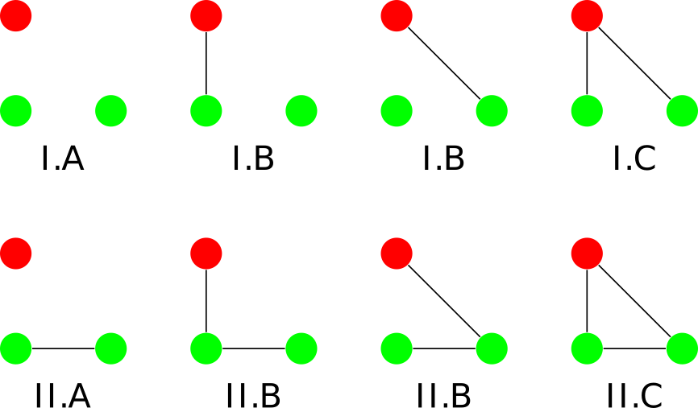
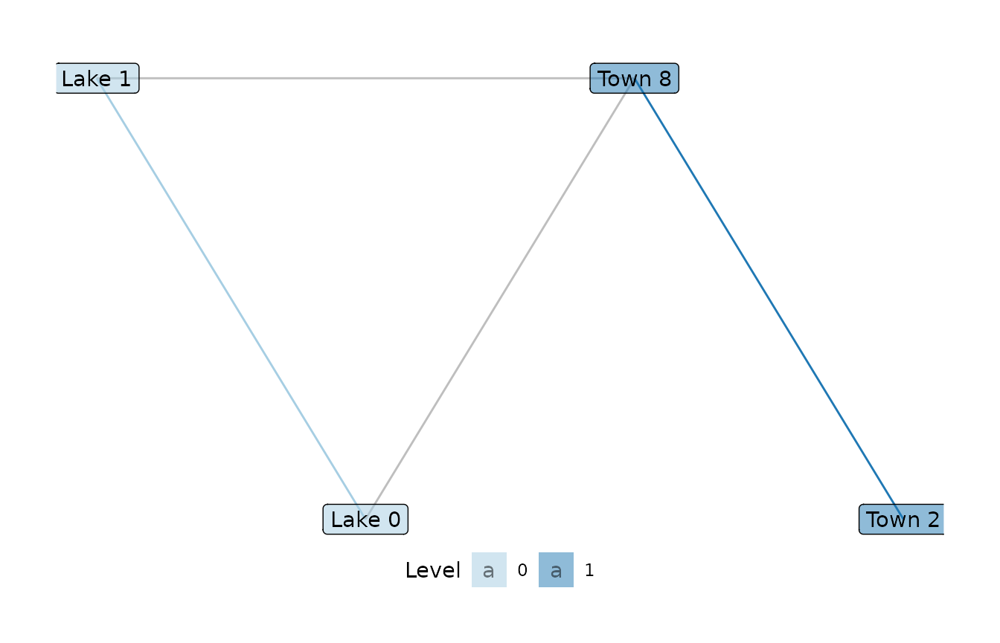
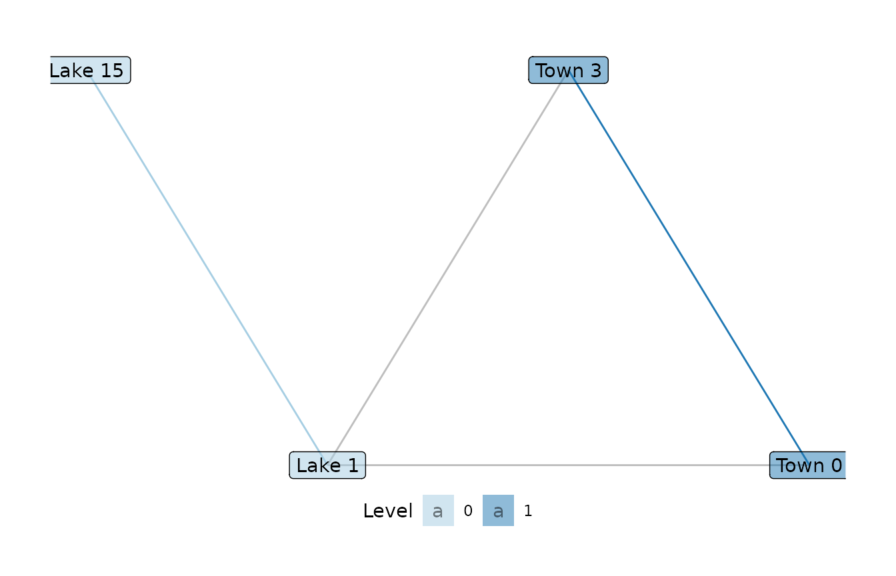

This vignette introduces the nomenclature used for labeling motifs in multi-level networks as used in motifr.
Motif classification – how to label motifs in the wild
Motifs are small subgraphs whose occurrences can reveal interesting structures in empirical networks. Motifs can span several levels of a multilevel networks. This package uses motif identifier strings for identifying motifs. These must provide information about
- the number of nodes contained by the motif on the various levels of the network (signature and positions),
- the structure of the motif itself, i.e. which edges are present, (motif class).
A motif identifier string contains these two pieces of information. It consists of a head and class, and is of the form HEAD[CLASS], e.g. 1,2[II.C]. The head specifies the signature and the positions of the motif while the class represents the motif class.
Let’s consider an example in a two-level network with levels 0 and 1. motifr generally counts levels starting at 0, due to its Python roots. The motif identifier string 1,2[II.C] represents the closed triangle with one node on level 0 and two nodes on level 1. 1,2 signifies that the first level (0) provides one node and the second (1) two nodes. The expression II.C in brackets stands for closed triangle. Alternatively, 1,2[I.C] represents the open triangle with the same number of nodes taken from the levels.
You can explore all possible motifs interactively in a shiny app included in the package by running (after installing and loading the package):
When in doubt about what a given identifier string implies for you specific network, you can let motifr show you the motif either in a dummy network or an example of the motif in a network you are analysing (the second will only work if the network you are analysing actually contains the motif) with show_motif(motif).
The following code below uses show_motif to illustrate a “1,2[II.C]” motif as found in the wetland management network object ml_net. ml_net contains a level attribute (specifying which node belongs to which level) named “sesType”.
show_motif(motif = "1,2[II.C]", net = ml_net, label = TRUE, lvl_attr = "sesType")

motifr supports both undirected and directed motifs, although the number of directed motifs currently supported is much more limited currently than the number of supported undirected motifs. If your favourite motif is not part of the zoo yet, reach out to us by creating an issue on github describing the motif you would like to have included.
A full list of all supported signatures and motif classes can also be found in the documentation of the Python sma package in section Appendix: The Motif Zoo.
A word of caution on counting: Position matching
Motifr uses an internal mechanism called position matching for translating the head of a motif identifier string, e.g. 1,2, to a sequence of levels corresponding to the signature of the motif. Usually, this procedure yields the desired matching and is of no interest to the user. However, sometimes it might be necessary two overwrite the position matching by providing custom positions.
An example for this is the motif 2,2[II.D]. It contains two nodes on level 0 and two nodes on level 1. The two nodes on level 0 and the two nodes on level 1 are respectively adjacent. Furthermore the two nodes on level 0 are linked to one of the nodes on level 1.
show_motif(motif = "2,2[II.D]", label = TRUE)

This motif differs from the motif 2:1,2:0[II.D] which contains the same number of nodes from the different levels. However, here the roles of the levels are swapped, i.e. in this motif, the two nodes on level 1 are adjacent to the two nodes on level 0.
show_motif(motif = "2:1,2:0[II.D]", label = TRUE)

The position matching can be overwritten by providing the levels corresponding to the entries in the motif signature, e.g. the head 2:1,2:0 signalises that the first level containing two nodes is level 1 (“2:1”) while the second level containing two nodes is level 0 (“2:0”).
See the documentation of the Python sma package, subsection Position matching for a detailed description of the procedure.
In general, it is recommended to use show_motif(motif) to check whether the provided motif identifier string is interpreted as intended by the software.